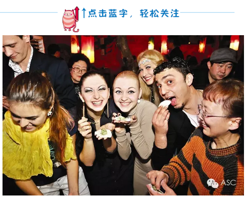
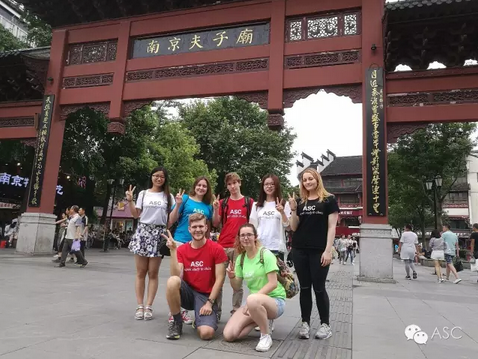

互惠动态
|
|
互惠生好在哪里，听听中国家妈怎么说！

互惠生：西班牙，贝塔，20岁
互惠家庭感言：贝塔已经来我们家快2个月了，这段时间来，家里增添了很多快乐。她的作息习惯非常好，每天晚上10~11点就会睡觉，早上7点起床。我们一家人共进早餐，边吃饭，边聊一下网上的新闻。早餐后，我们就上班和上学了。她会安排自己的生活，如出去逛街，去近的地方旅游。晚上会先陪孩子们玩一会，晚饭后，给孩子上60分钟的英语课。每天一个话题，都是她精心挑选，设计的。都是孩子比较敢兴趣的话题和内容。
让我特别感动一次就是，她本来和另外一个互惠生约了6点见面，就发了信息给我，由于我在开车，没有看到。直到后来我看到信息，回复给她，她才出门。约会就推迟了1个小时。晚上10点多准时回来了。
上海家庭，1个孩子，女孩8岁
互惠生：法国，Lisa，19岁
互惠家庭感言：自从Lisa进入我们的家庭生活后，很明显给我们的孩子树立了一个良好的大姐姐的形象。我的孩子从她的身上看到了自己的不足，更让我们欣慰的是我的孩子的外语在Lisa每天的辅导下，至少在听力和口语方面有很明显的进步。
在个性方面，Lisa也是一个值得称赞的孩子，在这短短的两个星期中，她给我的孩子树立了一个懂礼貌的榜样。Lisa还会带着她一起煮饭，这是我们以前从来没有奢望过的景象。在才艺方面，Lisa则给了我们更多的surprise。总之在这两个星期的生活里，我们感到很快乐。当然在未来的半年的生活里，多少会有问题，但是我相信我们能够一起面对。
武汉家庭，1个孩子，9岁男孩
互惠生：法国，保罗，20岁
互惠家庭感言：保罗是个很阳光的大男孩，很有责任心。来到我们家已经2个月了，每天都会按时起床送孩子上学。在帮助孩子学习方面，也很认真，一个单词一个单词的教，知道孩子能够准确地发音。
他对孩子的生活习惯也有很大的帮助，他来之前我家儿子都是大口大口地吃饭，还发出吧唧吧唧的声音。现在在保罗的努力下，他吃饭发出的声音比之前小很多，也学会了细嚼慢咽。每次都会提醒他，所以我很开心。
南京家庭，1个孩子，女孩4岁
互惠生：荷兰，卡瑟亚，24岁
互惠家庭感言：卡瑟亚是一个诚实自立的人，个性比较安静，有较好的的生活安排习惯，相对她这个年龄而言比较成熟自律，能吃苦，会关心家庭的感受，尽量让自己的事情和行为不给家庭带来影响。基本上每天会安排自己和孩子的时间，对于需要她照顾和做的事情也基本能做到。对家庭的教养理念比较尊重，也积极参与家庭的各种活动。
每天早上会准备给孩子的衣物和陪伴孩子洗漱，白天会有自己的安排和朋友见面或和家庭成年成员适度的交流，晚上孩子回家后会安静的陪在孩子身边观察孩子的需要并满足。比如孩子喜欢画公主，卡瑟亚还专门上网下载学习如何画公主然后每天和孩子一起沉浸在画公主的乐趣中。
杭州家庭，2个孩子，女孩7岁，男孩3岁
互惠生：英国，史迪威，24岁
互惠家庭感言：史迪威是个非常懂事而有趣的英国女孩。自从她来到我们家，最典型的一天是这样度过的：早晨，她送女儿搭地铁上学，回来后我们一起去超市采购食材。下午我们会挑一个咖啡馆或者电影院，有时候也会她做中文作业，我做英语作业，互相勉励互相吹捧当然也互相嘲笑。晚上她会接回女儿，辅导作业，陪孩子们玩耍。
史迪威带给孩子很多好的习惯，比如打喷嚏一定要捂住嘴、请别人做事前一定要先说Please，如果遇到教育问题她也会讲讲和英国的差异。我7岁的女儿是个不好对付的姑娘，羞涩、又有点小叛逆。史迪威对她很有耐心，不说教，努力和她玩各种游戏。我惊喜地发现，女儿竟然可以和她用英语争论！史迪威也很得意地告诉我，在孩子上下学的地铁上，她经常逗她说话，经常有人惊叹一个中国女孩竟然可以和一个英国女孩自如交谈。至于我三岁的儿子，他是我们家唯一一个坚持和史迪威讲中文的人，不过很让人高兴的是，他虽然不说，但是现在可以基本听懂史迪威的话，两人可以玩的很嗨。
